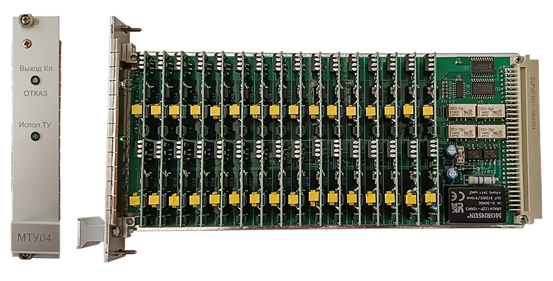

Замена МТУ

Если во время работы или прохождения теста на МТУ загорелся красным цветом светодиод над надписью «Отказ», то это значит, что модуль ТУ вышел из строя и его надо заменить на исправный модуль из ЗИП, т.к работоспособность линейного пункта нарушена.
Замена модуля производится без отключения питания линейного пункта.
Для этого необходимо:
- Открутить винты, фиксирующие модуль на БТ.
- Извлечь модуль ТУ из БТ.
- На это место вставить исправный модуль ТУ (дополнительных настроек модуль не требует).
- Закрутить винты, фиксирующие модуль ТУ в БТ.
- Запустить тест ТУ по клавише «Shift+6».
- Если после завершения теста, светодиод «Отказ» не загорелся, то модуль ТУ исправен и работоспособность линейного пункта восстановлена.